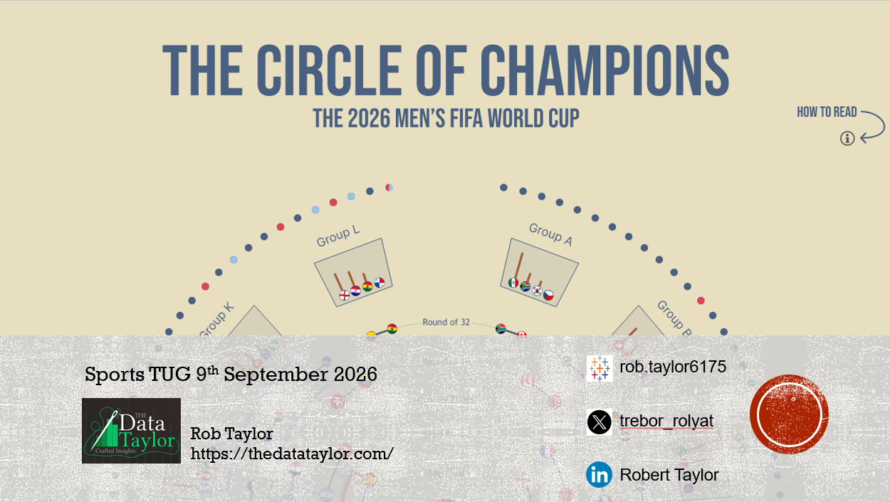
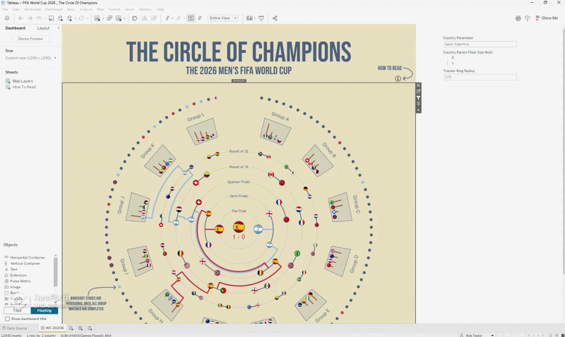
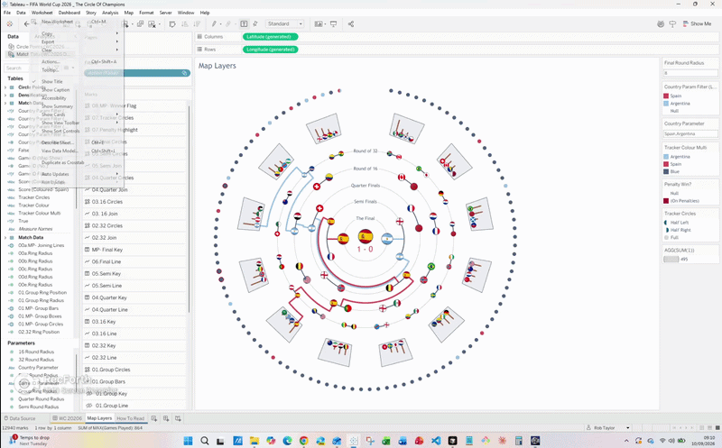
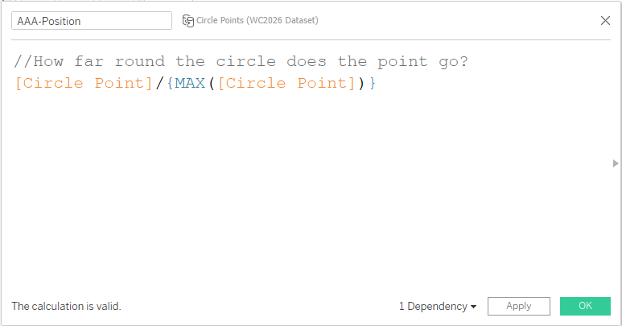
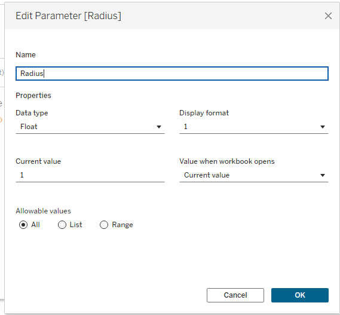
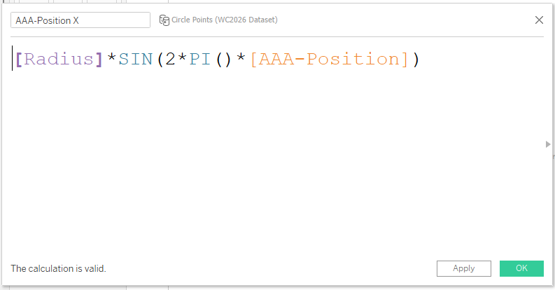
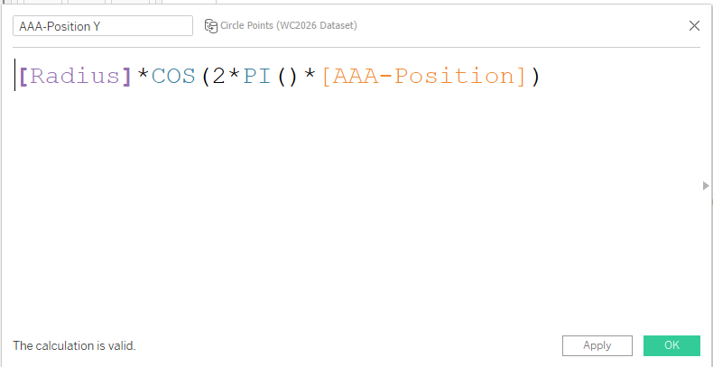
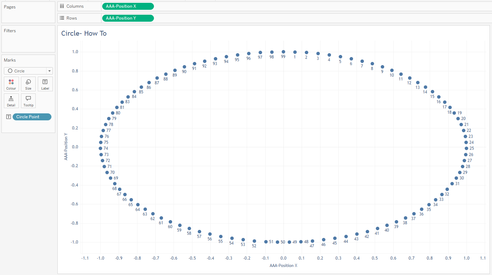
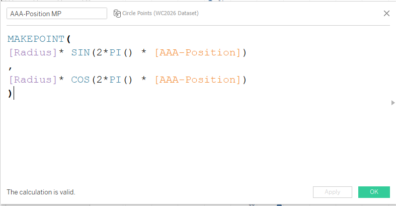

Tips From The TUG
On Wednesday 9th September I was invited along to showcase my Circle of Champions viz at the Sports Tableau User Group. It was a great opportunity to share my work with Tableau users in the sports industry, and thank you to Mo, Steven and Fred for inviting me along. Talking at these kinds of events can be quite intimidating or daunting, but I can't express enough how much I would recommend doing it if you work in this field. It's a great way to network, share your work and get feedback from other Tableau users. Normally sitting on the other side of the desk as one of the hosts for the Tableau Public TUG, it is easy to forget the work that goes into these presentations, so a huge thank you to all that take the time to present and also those that attend to listen to the community members' stories.
Section 1: The Talk

So, what was my talk about? I showcased my Circle Of Champions viz that I created to summarise the 2026 men's World Cup.

If you want to explore the viz yourself, you can find
FIFA World Cup 2026 | The Circle Of Champions
on Tableau Public.
However, this blog isn't going to be about the viz itself, but rather some of the tips I shared for using
Tableau to create the viz and a walkthrough of the basics of creating circles in Tableau.
Tip 1:
Keep a container at the side of your viz so that you can easily access parameters, filters, etc. which you don't want visible on your actual layout. This is a great way of tweaking things as you build your viz.

- On your dashboard screen go to the Dashboard tab on the left and select floating.
- Next you want to drag a vertical container anywhere onto your dashboard view.
- Drag the right side of this container off to the right of the visible area.
- Finally drag the left side of the container to the left of the visible area.
- You now have a container you can use to add whatever you want, but it will not be visible when you publish the final viz.
Tip 2:
Add Captions to any workbooks where you are doing something complex. These can be notes on calculation renames, steps taken or anything else that would help future you work out what you did at the time.

- On a worksheet, go to the worksheet tab at the top and select Show Captions.
- The Caption box will now appear at the bottom of your screen.
- Tableau auto populates this with what it thinks is happening, but you can remove this and add any text you like.
- You now have notes and tips for future you to save you any lengthy exploration.
Tip 3:
Use a floating sheet over your main viz with a show/hide button for hidden how-to details. This is a great way to show the user how to interact with your viz without cluttering the main view itself.
I have already written a full walkthrough of this approach in The Power Of A Show/Hide Button if you want the step-by-step guide.

How To Create A Circle
Once you learn the basics of creating a circle in Tableau you can then do anything you want with it. This was the learning I needed to do to create this viz. Once I had the basic fundamentals, I was then able to extrapolate that and create all the clever parts of the main visualisation.
Step By Step Guide
- You need a good amount of points to create a smooth circle. In this demo I use a list of numbers from 1 to 99.
-
AAA-Position: You need to create a calculated field which tells you how far round the circle each point goes.
We take each point and divide it by the maximum amount of points available in the dataset. The moustachio brackets
are what allow us to get that maximum value.

-
Radius: You need a field to tell you the radius of the circle. This is best done as a parameter to make it easy to change.
Once we have that we can then change it in one place, rather than having to go back and forth through multiple
calculations as we build our viz.

-
AAA-Position X: You need a field which calculates the X position of the point on the circle. 2*PI()*[AAA-Position]
converts the position into radians for a full circle. SIN() takes that angle and calculates the SINE, which gives
the horizontal displacement from the circle's centre in polar co-ordinates. [Radius]* scales the displacement by
our desired radius, creating the final x-coordinate from the centre.

-
AAA-Position Y: You need a field which calculates the Y position of the point on the circle. 2*PI()*[AAA-Position]
converts the position into radians for a full circle. COS() takes that angle and calculates the COSINE, which gives
the vertical displacement from the circle's centre in polar co-ordinates. [Radius]* scales the displacement by
our desired radius, creating the final y-coordinate from the centre.

-
Now you have all your fields you can plot it on a worksheet. Put the AAA-Position X field on the Columns shelf and the
AAA-Position Y field on the Rows shelf. Add the Circle Point field to Detail or Label. This will then create a circle of points.

-
You can also add both these calculations to a MAKEPOINT calculation. This will then
allow you to use it with Map Layers and plot multiple things on top of each other.

The Last Thread
Presenting Circle of Champions at the Sports Tableau User Group was a reminder that the best tips are often the simple ones. A floating container tucked off the side of the dashboard, captions that future-you will thank you for, and the basics of building a circle in Tableau, those small foundations are what unlock the more complex layers later. Once you understand position, radius, X and Y, and can wrap it in MAKEPOINT for Map Layers, you can take the idea almost anywhere.
If you get the chance to speak at a TUG, take it. And if you try any of these techniques in your own work, I would love to see what you build. Circle of Champions is there on Tableau Public if you want a closer look.
Rob.